第一课：认识音符
简谱的音符是用1、2、3、4、5、6、7几个阿拉伯数字来代表的（五线谱音符是用“豆芽”来表示的）。请看图上所示。
唱名——就是如何唱（念），如1，我们要唱“do”（中文写成“多”）。
这七个音的唱法一定要随口唱出，比如看到5，我们就要马上唱出“sol”（“索”或“梭”）。这几个音的唱法要死记硬背住。可以用七张小纸片，比如在一张纸片一面写上3，另一面写上中文“米”，如果看到3不会念唱名，就看另一面的“米”。这也是一种记忆的方法。
请注意“2”这个音符的唱名，中文标示为“来”，这个汉字用得不是很准（找不到恰当的汉字），还是唱它的拼音“re”准确些。
字母名（英文字母名，或也叫“音名”），不用唱的。这点知道就可。
第二课：高音、中音、低音
音符上有小黑点的，此音就是高音；音符下有小黑点的，就是低音。音符上下都没有黑点的，就是中音。请看图上所示。
“高音”与“音量大”是不同的概念，不要搞混了。
高音——指音频高。什么叫音频？也就是声音振动的频率。频率用赫兹（HZ）来作单位，一赫兹等于“每秒振动一次”。打个比喻：乐器上一根细弦，你去拔动它一下，这根弦就振动起来，如果此弦每秒来回振动1000次，它发出的声音我们叫它高音。我们再拔动另一根粗弦一下，如它每秒只振动50下，我们可以将此弦发出的声音叫低音。这只是个比喻。
同样一个高音，有音量大的，也有音量小的。比如我们拔动吉它上的一根空弦，重拔发出的音量大，轻拔这根弦则发出的音量小，但音高相同。
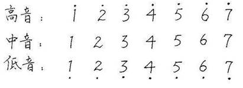第三课：音程
两个音之间的距离，就叫音程。注意：3与4的音程要小，同样7与1间的音程也小。请看图所示。
这课知道就可，以后再慢慢深入了解吧。
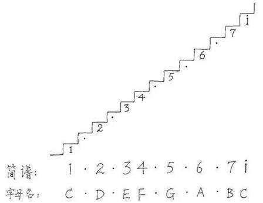第四课：唱准1234567 i
请看图，图上有八个音，最后一个音是高音1。
在从头唱到尾这八个音时，要在唱完4时换口气（吸口气），接着再唱右边几个音，这样气息足则音高才能唱上去。
第五课：音符时值
什么叫音符的时值？指声音延长的时间。我们有时叫“拍”（用“拍”作时间单位），如果一拍等于一秒钟的话，我们不说这个音有几秒，而说这个音有几拍（或说唱、演奏几拍）。
在这课我们要弄清楚音符，如四分音符、八分音符、十六分音符、二分音符、全音符等。
打个比喻：全音符为一个圆饼，将它分为两半，则每半块饼为二分音符。或将这个圆饼分成四块，则每小块为四分音符。
一般说来，一个四分音符我们称它为一拍。
请看下图所示，一目了然。
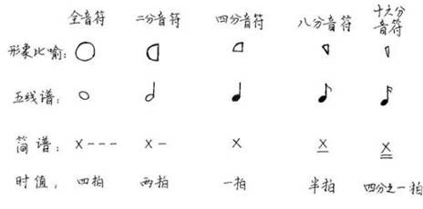第六课：乐曲节奏速度的快慢
请看下图所示。
在曲谱的左上角或曲谱中间某处，常有五线谱音符“豆芽”等于80或60或40等。等于80，则此曲不慢，如等于40则此曲为慢曲了。
“豆芽”等于80，则意为每分钟要演奏80拍。不快不慢的节奏速度每分钟一般为70到80拍间。
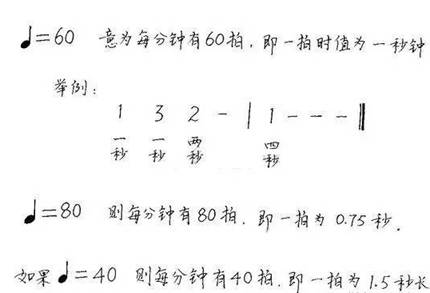第七课：曲调
曲谱的左上角常标有1=C类图标，则指此曲的1（do）音为C（字母名），那此曲就为C调。
请见图上所示，此内容暂了解一下就可，以后再搞清吧。
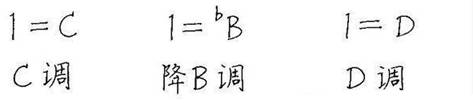第八课：节拍
在曲谱左上角会有2/4、3/4或4/4类标示。如2/4，则指一个音节内有两拍，每拍为一个四分音符。上面那个2指两拍，下面那个4指四分音符。
请见图上说明。
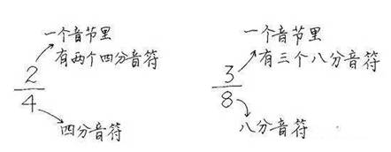第九课：乐曲各节拍的特点
乐曲如同竹子有节，音节线（细竖线）就如同竹节（竹节巴），将音符有规律地分开。
如2/4节拍，音的规律是“强、弱”。这里的“强”意为重音，“弱”意为轻音。两根音节线内的第一拍强音，第二拍为弱音。
同理，3/4拍和4/4拍请见图上所示。
曲谱上不会在每个音符上或下标明强弱等字，通过曲谱标明的“2/4”类或音节线就能知道音节内哪个音为强音，哪个音为弱音。
这课内容很重要，要弄明白。
第十课：节拍与节奏
节拍与节奏是不同的概念。
节拍一般是固定的，如2/4拍、3/4拍、4/4拍，能明白音的强弱规律。
节奏是活的，可以说指音的时值长短。节奏不准，一般说的是某个音演奏快了，或某个音演奏短了。
请见图上说明。
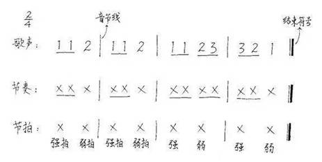第十一课：丰富的节奏
跳国标舞的人知道，节奏种类有很多，各有特色，且每种节奏也是固定有规律的。如4/4拍的节奏就有“仑巴”、“慢四”等多种。3/4拍的有“华尔兹”，华尔兹节奏与3/4拍的强弱是一致的。
这课了解就可。请见图上说明。
第十二课：2/4节拍的拍子打法
大家要将2/4拍这几课的内容学好，后面3/4拍、4/4拍的内容学起来就容易了。
打拍子，也叫划拍子。打拍子主要用右手。打拍子时手要柔软些，不要太疆硬。
拍子要打准（速度要打均匀），不要有快有慢，可以依照节拍器、钟表等来帮助。
2/4拍子的打法有多种，不同的老师的打法可能不一样，但自己要固定一种打法。
这里介绍几种2/4拍子打法。
第一种（配图上所示）：右手从左和右划V字为第一拍，右手从右向左划V字为第二拍，这样来回不断地划。（嘴里可以念一、二、一、二……）
其它2/4拍子的打法：
如：右手拍下左腿为第一拍，再用右手拍下右腿为第二拍。
如：右手重拍下桌子为第一拍，再轻拍下桌子为第二拍。可以拍桌子上的同一地方，也可以拍不同的地方。
如：用脚走路打拍子，走左脚为第一拍，走右手为第二拍。
第十三课：2/4拍子打法的基本练习
请看下面的配图，依照练习。用右手打拍子。
图的下部分有一种举例，因为出现了八分音符，要多加练习。
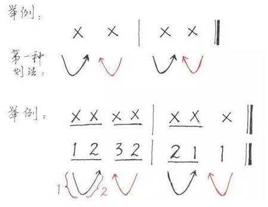第十四课：节奏的念法“哒”
我们在练习打拍子时，一般用“X”这个通用符号来代替1（多）、2（来）、3（米）、4（发）、5（索）、6（拉）、7（西），这个X唱作“哒”。如唱“哒 哒 哒哒 哒哒哒”。
注意：休止符不唱（不发音），但节拍还是要打，因为休止符也占时值。休止符用零“0”来表示，时值与音符时值同理，也有一拍、半拍等类。
请见图上所示。
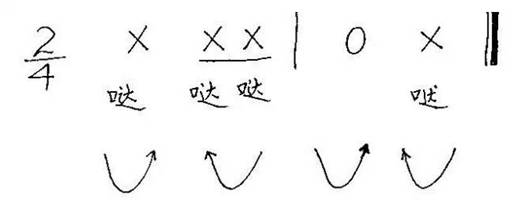第十五课：2/4拍节奏的实践练习
在这里我还要重复强调一下：节拍与节奏是两个不同的概念。节拍用右手划（打拍子）；节奏（旋律）用嘴唱，如唱“哒”。一首曲的拍子用右手打，从头到尾都是一样的；节奏则不一样，每个音节内的节奏一般不一样，有的唱“哒哒”，有的可能唱“哒哒哒”。
谱上未标明乐曲的演唱速度，则我们按通用的速度来唱，一般每分钟大约70拍或80拍，这个速度容易些。
请看下图。
此图上共有四个节奏练习（两个音节一个），用双细竖线分开的。
先学练容易的一个，这样分开将每个节奏练习都练熟后，再将四个节奏练习连接起来练习。
好！我们现在来练习第一个：眼看谱子，右手打2/4拍子（机械运动），嘴里伴随拍子唱“哒 哒 哒哒哒 ”，连续这样重复。
第十六课：2/4拍子节奏的实践练习
请看下图。
图上也有四个练习，每四个音节一个练习。和上节课同样练习就可。
这里要说一下，2/4拍的乐曲多为进行曲，节奏多数有力，平时走路时用脚也可打拍子。
第十七课：含有休止符的2/4拍子练习
请看下图。
图上有八个不同的练习，其中有的练习中带有休止符“0”。
有休止符的节奏练习，拍子打法不变，遇到有休止符时右手不能停（照样打拍子），但嘴却不能唱（停止唱“哒”），遇到X时才唱“哒”。如不明白，请参看第十四课的配图。
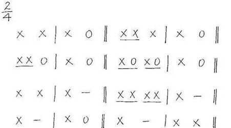第十八课：2/4拍的简单乐曲视唱练习
图上有两首很简单的乐曲，请眼看曲谱，右手打2/4拍子，嘴随着拍子唱旋律，这里不再唱“哒”，要唱“多来米……”
第十九课：2/4拍的民歌视唱练习
图上这曲为2/4拍的外国民歌，不难，请视唱练习好。
谱中有几个“V”，这是乐句之间的间隔符号，也是换气符号。
第二十课：2/4拍的《金孔雀轻轻跳》视唱
图上这曲为一首简单的葫芦丝打音练习曲。学到这里，这曲就算您以前未听过，也可以视唱出来了，可能第一遍唱不好，多唱几遍也就唱好了。同样要打着拍子唱。
第二十二课：3/4拍子的节奏基本视唱练习
请看图示
图上有六个独立的练习，都需打着拍子视唱练习。最后还要再将这六个练习连接起来视唱。
3/4拍子是圆舞曲的节奏“嘭恰恰”。拍子要打得美些，手腕动作要柔些。每分钟约80拍的速度。
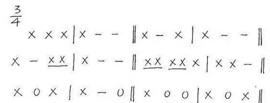第二十三课：3/4拍子的节奏基本视唱练习
请看图。图上有三个练习。同样需进行视唱练习。每分钟约80拍的速度。
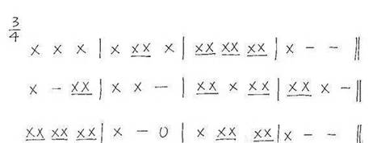第二十四课：3/4拍简单乐曲视唱实践
图上有两首很简单的大家都听过的曲《新年好》《生日歌》，请大家打着拍子将它们唱好，虽简单，但也要唱准。
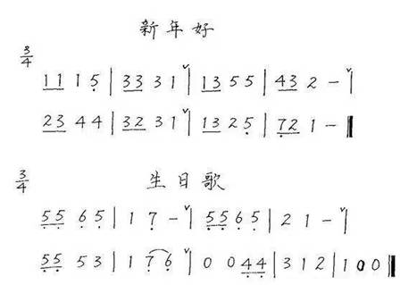第二十六课：4/4拍子的打法
请看下图。
4/4拍子的打法：第一拍右手向下再向上，第二拍右手向左边划V字，第三拍右手向右边划一个宽些的V字，第四拍右手向左划V字回到第一拍的起始位置。
注意：第一拍向下划和向上划的运动轨迹线是相重叠的（图上未画重叠，是为了便于眼看），第一拍为强拍（重拍），划的动作可夸张点或幅度略大些。
4/4拍子的乐曲一般为抒情曲，因此拍子要打得柔和有情感些。
第二十七课：4/4拍子的基本视唱练习
图上有三个练习，请认真打着拍子，嘴里唱着“哒”练习。可按每分钟大约80拍的速度视唱。